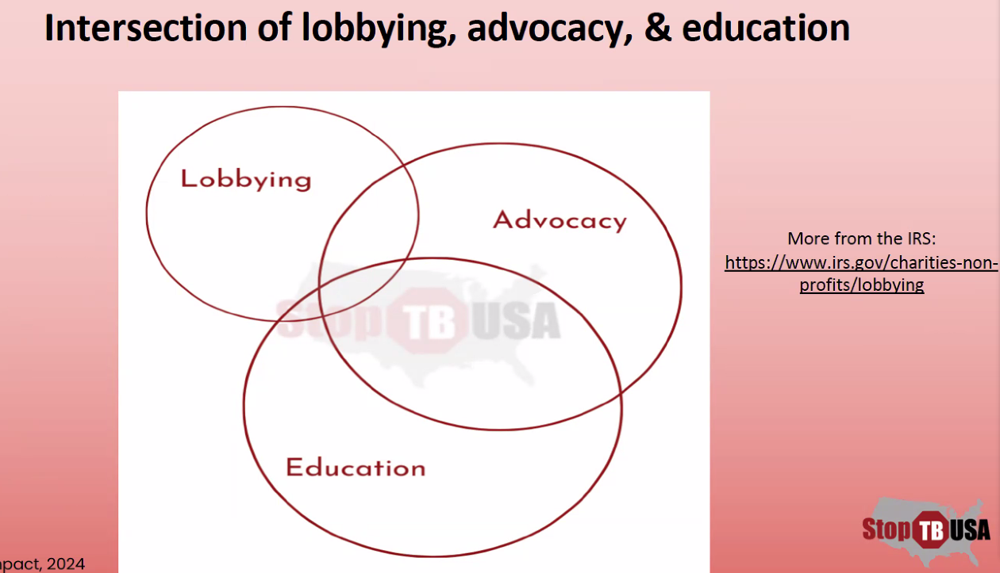
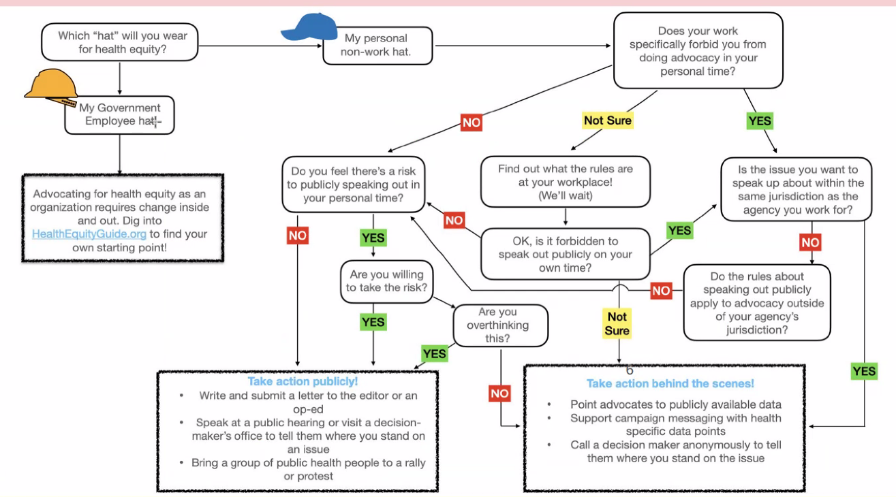

Stop-TB Communication Training
TLDR
Use EPIC to mobilize the reader. Focus on the collective solutions and systematic issues. Use a shared value to hook the audience and always be detailed and concreate in every step, you should almost never be vague about the issue, solution, or call to action
EPIC
Why/What
It is used for:
- Conversations w/ elected officials
- Letters to the editor
- Letters to decision makers
- OpEds
- Elevator pitches
- Recruiting
E: Engage Your Audience/Hook
This step is to use the shared value, and if targeting an official, a action that they have taken in the past. This is like a hook in an essay. You can also use a personal story or anecdote.
The goal is for them to be engaged with you.
P: Present the Problem
Explain the cause of the problem, focusing on the structural/systematic failures rather than the individuals. Go into the history if needed. Go into detail when applicable. Personalize it when you can, and add stories that link to the problem. Do not focus on the individuals.
The goal is for the reader to know the problem and why they should care.
I: Illustrate the Solution
When talking about the solution, be concise about what the collective solution is. Be very specific and avoid being vague. Use studies, reports or first hand accounts to back up your claims.
The goal is for the reader to know what the heck can even be done. It helps the reader avoid getting into the “broken beyond repair” trap.
C: Call to Action
This will vary by who you are writing to. Be very concise and ask for something timely and specific. If you are asking a rep. yes or no questions such as “Would you please work to assure that TB is once again included in the CDMRP for fiscal year 2025?“. But for elevator pitches or recruiting, it might look different.
The goal is to mobilize the reader and get them to do something with the information you just gave them.
Communication
When talking about change, and wanting our government to change, it is important to use specific details, such as the CDC or even a program in the CDC. They also suggest using the public structures metaphor, which is to build up agencies then maintain them.
Always remember to focus on how to fix the issue, not that it just exists. When talking abut how to fix it, always be as specific and concise as possible.
When educating the reader, always give a (sometimes brief) explanation of how it happened and why it happened. Or in other words, the history of it.
Shared Value
Using a shared value, like social justice, can help the reader connect with the cause. But this can also be a trap. You should avoid using words that spark politics, but instead you can give the essence of the value without relating it to politics.
For example, “a just society makes sure no community is singled out or overexposed to harm.” This doesn’t just directly say equality, but gives the essence of it without politicizing it.
Examples
- Responsible planning
- Opportunity
- Stewardship
- Community
- Future preparation
- Opportunity for all
- Prevention
- Common good
Collective Solutions
Always focus and show how the solution is collective and thus systematic. This also rules out blaming one person on the issue.
Terms/Ideas to Avoid
Avoid having the listeners/readers going to the “broken beyond repair” trap. It will just make nothing happen.
Avoid using the term vulnerable, it can make the reader relegate the vulnerable person to a them and thus not help.
Don’t propose a one size fits all solution. Instead do targeted justice. Don’t point out unequal outcomes. Instead point out unequal obstacles. In other words, point out the causes, not the effects.
Personal Stories
If you share a personal story, or any story or empathetic line, always have it link to the broader systematic issue. Not doing so will risk people blaming the patient or just try and fix the patient, not the systematic issue.
Lobbying vs. Activism vs. Education
Lobbying is not the same as activism, which are all not the same as education. But they do all intersect. They shared a nice Ven diagram of how they intersect.
The distinction is important because some jobs may have restrictions on lobbying. Lobbying is considering asking representatives and government people for specific things, like funding x amount toward tb. Advocacy is getting the word out about the issue and getting more people to back the cause (note: this does include education). Education is getting people do know about the history of the cause and the statistics and facts.
On the capital hill day, the people that went there did a lot of the education, they taught the congressmen why it was important. But they needed our calls to lobby for the change. They saw this as very effective way of lobbying, even though some of them might have restrictions (because they are healthcare workers and cannot lobby or something like that).
What to do if I Have a Restriction
They provided a nice diagram for this issue:
